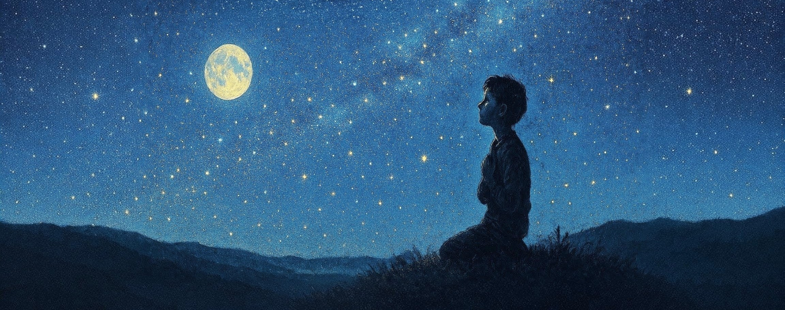

A very long time ago, before the sky learned how to shimmer and sparkle, the nights were whole and unbroken.
Each night, after the Sun had set beyond the horizon, darkness covered the Earth like a deep ocean. The only source of light in the sky was the Moon. It drifted overhead;pale, patient, and alone.
The Moon gave what light it could, pouring silver across rooftops, rivers, and sleeping faces. It never failed its post.
But the Moon's light was borrowed. It reflected what it was given by the Sun. Its light fell upon the world thin and narrow, like a single thought in a stubborn mind. When the Moon turned its face away, or stayed below the horizon, the sky gave only darkness.
The world did not know these details. The people simply said, "See? We have moonlight. It is not much, but it is enough." They had never known anything else.
And so, the night sky remained singular.
In a small town beneath that solitary glow, there lived a boy who was different from the other boys he knew. He had a softness in his heart where others were hard, a tenderness that leaned in unexpected directions. His difference was small in the measure of the cosmos. But the other boys noticed.
They sensed it the way some animals sense bad weather. Children have a way of detecting the faintest oddity about a person and calling attention to it. They circled him like restless birds. They laughed at what they could not name. They feared what they did not understand. And because they did not understand, they decided he must be wrong.
The boy did not know what made him different. He only knew that when he laughed, it sounded wrong to others. When he loved, it felt wrong to them, though they could not fully explain why. They tormented him with their teasing, mocking, and sometimes outright cruelty. They made sure everyone knew that he was "wrong" and they were "right."
And so, the boy learned.
He studied the other boys closely. He memorized their jokes and practiced their posture. He deepened his voice and trimmed his words before he spoke. He borrowed their mannerisms like the Moon borrowed light. He reflected what was handed to him, polishing himself smooth, pale, and acceptable.
He became very good at it.
The other boys noticed. They stopped laughing at him. The teasing thinned. The torment faded. The world, satisfied with this, turned its gaze elsewhere.
"See," they said. "He is like us after all."
But the boy felt something falter inside his chest. There had always been a warmth there; a glow that did not come from outside. He had felt it ever since he was very young. It was a warm pulse beneath his ribs, like a tiny sunrise trying to happen.
Every time he swallowed the truth, his light dimmed. Each time he nodded at a lie, the warmth faded. Whenever he pretended to be other than he was, his inner glow flickered, threatening to go out completely.
One night, when the Moon had not yet risen, the boy lay awake, pressing his palm against his chest. He could no longer feel the warmth inside of him. He felt only silence and darkness inside, mirroring the world outside when the Moon's light is not overhead.
For the first time, he realized that the darkness outside was not unlike the darkness that people carried within themselves. They were afraid.
Afraid of what was unfamiliar.
Afraid of light that did not come from where they expected.
Afraid of colors they had not yet learned to name.
He thought of the sky, vast and empty except for that lonely moon. At night, all light came from one place, one direction. One approved shape. No wonder they feared anything else.
"What if," he whispered into the dark, "the night had more lights?"
Many points of brightness scattered across the sky, each one shining separately, from its own direction. No single light dominating. No single way of being illuminated.
The boy felt something inside of him shift. He could feel his chest warming, his glow growing brighter.
He stopped pretending the very next morning.
It was not dramatic. There were no speeches. He simply ceased bending himself toward the expectations of others.
When the other boys gathered to tell their crude jokes, he did not force himself to laugh. When they spoke of their wants and desires, he did not pretend to share their dreams. When they mocked someone new for being different, he simply walked away, glowing softly from within.
The teasing returned, sharper this time. Their cruelty intensified.
“What happened to you?” one of them asked. “You were almost one of us.”
The boy looked at them, really looked at them, and saw not enemies but frightened children who had been taught that there was only one right way to be. Only one approved kind of light.
"I am tired of borrowing light," he said quietly. "I have my own."
They did not understand. They could not understand. They redoubled their efforts to extinguish his glow, to bring him back into the familiar darkness where everyone looked the same.
But the boy's light only grew stronger. Each time they tried to dim him, he shone brighter. Each time they tried to make him small, he expanded. Each time they tried to force him back into their shape, he became more distinctly himself.
The light inside him, no longer smothered, grew fierce. It poured through his skin. It gathered in his eyes. It trembled in his voice.
People shielded their faces when he walked by, not because he burned them, but because he revealed them. He was still afraid of being harmed because he was different.
Courage is not the absence of fear.
It is choosing not to extinguish yourself because of it.
The next night, the boy climbed to the top of the highest hill in his town. The world below was inky black. The Moon hung low, luminous and solitary.
The Moon regarded him.
I do not shine," it said after a long silence. "I reflect. It is my duty."
The boy frowned. "Does it make you happy?"
The Moon's light trembled almost imperceptibly. "It keeps the dark away," it said. "The world relies on me."
"But aren't you lonely?" the boy asked. "What if there were other lights up there, to keep you company?"
The Moon did not answer at once.
"I didn't choose to be alone," the Moon whispered. "I didn't choose the light I reflect. But I do what I can. I fear that if there were more lights, I would no longer be needed."
The boy understood that fear. He had lived it.
“I tried to be like everyone else,” he said. “I thought if I reflected them well enough, I would stop hurting.”
“And did you?” asked the Moon.
“No,” he said. “It only made me smaller.”
Silence stretched between them, vast and honest.
“What if,” the boy said carefully, “there were other lights? Not just one or two. But many. And not to replace you. Not to outshine you. But to share the sky with you.”
The Moon dimmed slightly, thinking.
“The world is afraid of what shines differently,” it said.
“So was I,” the boy replied.
“And what did you do?”
He drew a steady breath.
“I stopped hiding.”
He closed his eyes, letting every part of himself exist at once, bright, tender, and unashamed. The light within him flared. It rose from his chest like a breath he had been holding his entire life. It spilled upward, past treetops, past clouds, into the great waiting sky.
The universe noticed.
It had been watching all along, as universes do, curious about small, stubborn flames that refuse to die. It peered into the boy’s heart and found no hunger for dominance. No wish to erase what came before. Only a longing for others to see from more than one direction. To live without shrinking. To wake up and understand.
The universe is vast and ancient, but it is not unkind. It took the light the boy offered and did not keep it.
Instead, it scattered the light across the sky. Pinpricks became lanterns. Lanterns became constellations. Light bloomed in every direction. Each star burned with the same essence, fundamentally alike, yet each distinct in position and brightness. They shone from every direction, so no one could claim light belonged to only one source.
Below him, people stumbled from their homes. They stared upward; faces washed in new radiance. Shadows no longer fell in a single direction; they crossed and softened. Corners once hidden revealed their shape.
And the Moon? As it rose above the horizon, it looked around at the countless new lights in the sky, and for the first time, no longer felt alone.
On the hill, the boy fell to his knees, breathless.
He had not meant to remake the heavens.
He had only meant to remain himself.
But sometimes that is enough.
The world was transformed after that night. The sky was no longer a dark expanse lit by a lone, borrowed glow; it had become a canvas of infinite variety. Each star shone according to its own nature, contributing its unique spark to the beauty of the whole. The Moon continued its dance across the heavens against a backdrop of a thousand twinkling lights, no longer alone.
The boy grew into a man who continued to shine his light without apology or compromise. Others, seeing his courage, began to find their own light within themselves. Some glowed brightly, some softly, some in colors never before seen. But all were beautiful, all were necessary.
The darkness never completely disappeared. There were still those who preferred the old way, the single light, the familiar shapes. But they were no longer the only voice. The night sky itself testified that there were infinite ways to be, infinite ways to love, infinite ways to shine.
When a child feels different or alone, they need only look up at the night sky to remember: every star they see shines because someone chose to share their own inner glow, making it safer for others to do the same.
Darkness is not defeated by sameness.
It is transformed by many brave lights shining at once.